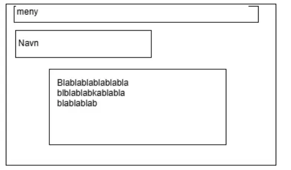

| Egenvurdering |
Resultat: Jeg syntes min nettside ble ganske bra, men noen ting som for eksempel index siden har jeg tenkt å endre på, men det tror jeg at jeg snakket om i videoen. Å lage et clicker spill var også kanskje en litt kjedelig ide, men jeg tror at jeg gjorde noe mer kreativt ut av det med tanke på boosten og lotteri maskinen. Tenker neste gang vi skal lage et slikt prosjekt så skal jeg legge en bedre plan for siden før jeg begynner, slik at jeg ikke trenger å bruke tid på å endre på navnene til variablene og funksjonene senere hvis de blir utdatert. |
arbeidsprosess: Jeg syntes at arbeidsprosessen min har blitt bedre siden prosjektet startet, og jeg får gjort en god del mer i timene nå enn før, men jeg merker at jeg soner ut en del, spesielt hvis jeg ikke vet helt hva jeg skal jobbe med. Derfor har jeg begynt å sette mål for økten dagen før, slik at jeg stort sett har en tanke om hva det er jeg skal prøve å oppnå i løpet av timen, og det har hjulpet ganske mye. |
| 3/1/2025 |
Jeg gjorde ganske mye idag(og litt i ferien). Jeg ble ferdig med Trykke spillet mitt, som nå har en gambling funksjon som er ganske gøy. Jeg la også til en setting knap som gjør at du kan endre filteret på nettsiden til å være grått. Så la jeg til en kalkulator som viser hvor mangen ganger man kan gamble i et spill jeg spiller. |
Chat, Mats, Tobias |
| 11/12/2024 |
Jeg ville Ikke drive med mer firebase, fordi det fikk meg til å ville bytte skole. Istedenfor så lagde jeg en bar som viser hvor lenge du har bosten fra golden cookiene. |
bare megselv |
| 09/12/2024 |
Jeg ga tilbake melding til Mats, og fikk tilbakemelding av han. Så sløste jeg vekk masse tid ved å prøve å legge til online leaderboards til cookie lcickerene min, som ikke gikk, vet ikke om jeg har tenkt å fortsette med det siden det virker litt vanskelig, men vi får se |
chat, firebase |
| 06/12/2024 |
Jeg hadde jobbet med golden cookie greiene på fritiden hjemme, så det virket allerede. Jeg gjorde heller om Index siden min, slik at den er ihvertfall litt hjelpsom siden den forklarer hva undersidene gjør. |
bare megselv |
| 02/12/2024 |
Jeg prøvde å lage en golden cookie funksjon men det gikk ikke, skal prøve igjen neste time |
gpt |
| 28/11/2024 |
Jeg fortsatte å lage cookie clicker clonen. Jeg fikk til å lage tall som popper opp når du trykker på bildet, og at prisen endres seg etter at du har kjøpt en ting |
gpt, konrad |
| 27/11/2024 |
Jeg beynte å lage en cookie clicker clon, du finner den i prosjekter og så koding |
gpt |
| 25/11/2024 |
Jeg filmet mesteparten av dagen så det var ikke mye tid til nettsiden. Jeg la til skissen her |
bare megselv |
| 22/11/2024 |
Jeg lagde den siden her på nytt siden den så stygg ut |
gpt |
| 20/11/2024 |
Jeg jobbet med den siden du ser på nå |
bare megselv |
| 15/11/2024 |
Jeg fikset opp i nettsiden før fagsamtalen med deg |
jeg brukte gpt, Peter og Mats |
| Skissen til nettsiden |
 |
Jeg endret ikke egentlig på så mye, uten om å ikke ta navnet mitt i en boks, fordi det så stygt ut. jeg gjorde hoved boksen med tekst større, sånn at teksten også kan være større slik at den er lettere å lese |